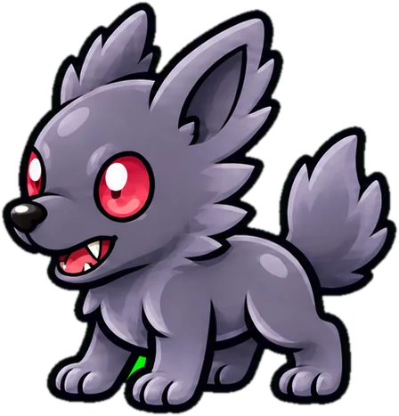

 GhostDark
GhostDarkTap a stage to read its story.
A chunky charcoal-grey pup with a stocky body, two red glowing eyes, and a little spiked ruff of fur that stands up when it is excited, Shadowpup pads through the dark forest like a small storm cloud. Its red eyes see perfectly in zero light, and it spends most nights chasing shadows it mistakes for playmates. The guardians once called these pups the forest's laughter - small, boisterous, and utterly unafraid of the dark that frightens everyone else.
Field note: Shadowpup can extinguish a candle flame just by staring at it from two paces away.
Dark Forest. Shadowpup and its family are found in the Dark Forest. See everyone who lives there.
Share a Bond Food that matches its types to become friends. Shadowpup loves:
A Bond Food is not a trick. It joins your spirit with the Kimuro's spirit, and only when it chooses you.
Print the Kimuro adventure packs: mazes, cards, a board game and Bond Mark medals.
See the printable packs